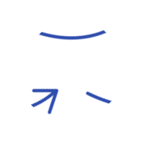
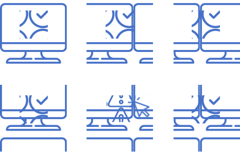
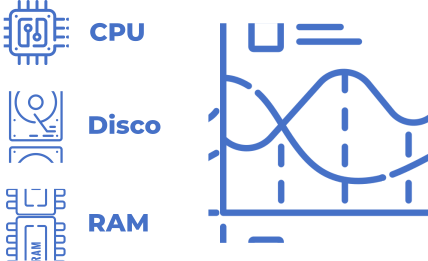

A FALTA DE MONITORAMENTO DE HARDWARE NOS RESTAURANTES
Pode levar a atrasos nos pedidos devido a equipamentos defeituosos, resultando em clientes insatisfeitos e
impacto na reputação.
FICOU INTERESSADO?


CHEFWARE: O PROJETO
A solução de monitoramento de hardware para restaurantes "Chefware" foi criada para
resolver problemas recorrentes de funcionamento de equipamentos como fornos, geladeiras e sistemas de
pedidos. Este sistema inovador oferece visibilidade em tempo real do status dos dispositivos, permitindo
que os restaurantes monitorem continuamente o desempenho dos equipamentos e evitem possíveis falhas ao
longo do tempo. Além disso, o Chefware otimiza a eficiência operacional, evitando atrasos e desperdícios
de recursos. Além disso, o Chefware otimiza a eficiência operacional do restaurante, ajudando a prevenir
atrasos e desperdícios de recursos. Isso permite que os proprietários de restaurantes se concentrem nas
atividades que são mais importantes para o negócio, como o atendimento ao cliente e a criação de novas
receitas. Com o Chefware, os restaurantes podem proporcionar experiências excepcionais aos clientes, mesmo
em momentos de alta demanda, destacando-se pela excelência e eficiência.
COMO FUNCIONA?
Monitoramos os computadores constantemente, emitindo alertas diante de qualquer
anomalia. Apresentamos um dashboard completo que detalha os componentes de hardware, oferecendo acesso
rápido e remoto a funcionalidades essenciais. Além disso, mantemos um registro detalhado de todos os
eventos passados, facilitando a comunicação entre a equipe por meio de mensagens e notificações em tempo
real.



VALORES
INOVAÇÃO
Sempre buscando soluções criativas, melhorias e maneiras mais eficazes de atender às
necessidades
de nossos clientes.
EXCELÊNCIA
Buscamos a perfeição em tudo que fazemos, nos impulsiona a alcançar o melhor resultado
possível.
CLIENTE
Estamos sempre ouvindo, aprendendo e nos adaptando para atender às suas necessidades.